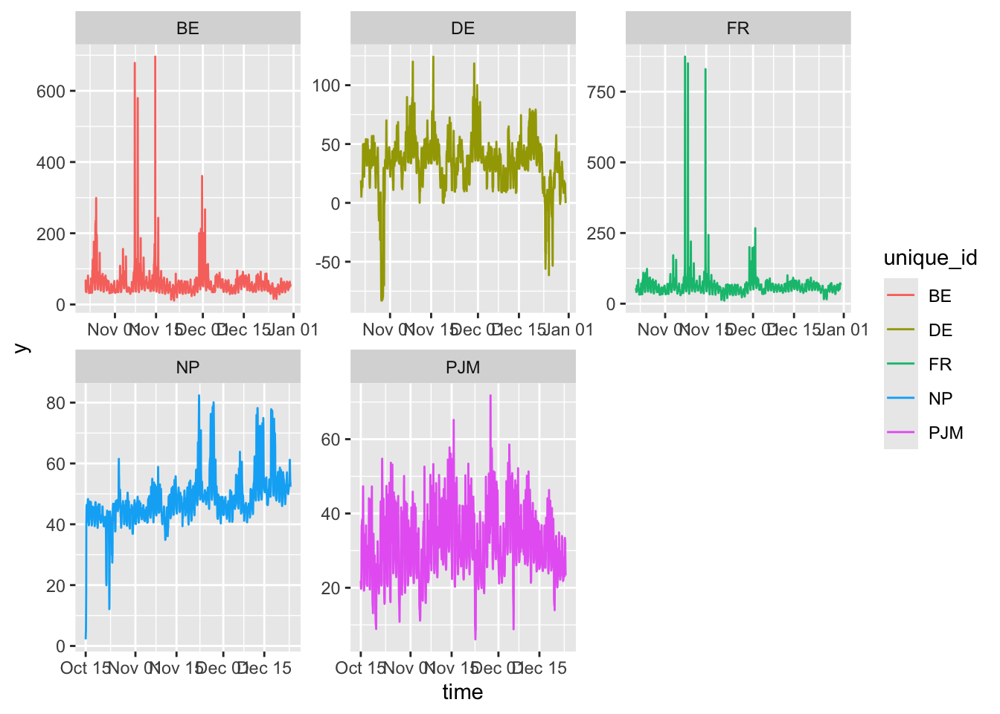

Show the code
library(tidyverse)
library(forecast)
library(xts)
library(prophet)
library(nixtlar)This post is a first look at Nixtla’s TimeGPT generative, pre-trained transformer for time series forecasting using the nixtlar R package.
As described in Garza et al. (2021), TimeGPT is a Transformer-based time series model with self-attention mechanisms. The architecture comprises an encoder-decoder structure with multiple layers, each with residual connections and layer normalization. The encoder, a stack of multi-head self-attention layers followed by a feed-forward neural network, processes the input time series. The decoder, which is similar to the encoder, generates the forecast. The decoder includes an additional multi-head attention layer that takes the encoder’s output as input. The model is trained using a teacher-forcing strategy, where the decoder receives the ground-truth values during training. The model is then used for forecasting by feeding the model’s predictions back as input during inference.

Nixtla’s website provides a considerable amount of explanatory material, documentation, and code examples in Python. The nixtlar package wraps the Python code to provide an R interface. The package documentation for version 0.6.2 doesn’t fully the R functions, but the vignettes provide sufficient code examples to get started.
Before getting started with TimeGPT, you will have to register for an API key. The process is easy enough and is described in this vignette.
library(tidyverse)
library(forecast)
library(xts)
library(prophet)
library(nixtlar)The electricity dataset included in the nixtlar package contains hourly observations of electricity consumption generated sourced from the PJM Interconnection LLC, a regional transmission organization that is part of the Eastern Interconnection grid in the United States. There are five different time series with data taken from 2012 to 2018.
Note that the electricity data is in “long” format and that ds the time variable is character data.
df <- nixtlar::electricity
glimpse(df)Rows: 8,400
Columns: 3
$ unique_id <chr> "BE", "BE", "BE", "BE", "BE", "BE", "BE", "BE", "BE", "BE", …
$ ds <chr> "2016-10-22 00:00:00", "2016-10-22 01:00:00", "2016-10-22 02…
$ y <dbl> 70.00, 37.10, 37.10, 44.75, 37.10, 35.61, 34.55, 50.49, 61.5…A look at the “wide” data frame shows that the various series do not cover the same time periods.
df_wide <- df |>
pivot_wider(names_from = unique_id, values_from = y)
head(df_wide)# A tibble: 6 × 6
ds BE DE FR NP PJM
<chr> <dbl> <dbl> <dbl> <dbl> <dbl>
1 2016-10-22 00:00:00 70 NA 54.7 NA NA
2 2016-10-22 01:00:00 37.1 NA 51.2 NA NA
3 2016-10-22 02:00:00 37.1 NA 48.9 NA NA
4 2016-10-22 03:00:00 44.8 NA 45.9 NA NA
5 2016-10-22 04:00:00 37.1 NA 41.2 NA NA
6 2016-10-22 05:00:00 35.6 NA 41.4 NA NAPlots indicate that all of the series show periods of considerable volatility. The BE, DE, and FR series appear to be stationary. NP trends upward to the right, and the PJM series appears to be nonlinear.
df2 <- df |> mutate(time = as.POSIXct(ds, format = "%Y-%m-%d %H:%M:%S")) |>
group_by(unique_id)
p <- df2 |> ggplot(aes(x = time, y = y, color = unique_id)) +
geom_line() + facet_wrap( ~ unique_id, scales = "free")
p
I’ll begin by showing off the nixtlar forecasting function, which can handle multiple time series by forecasting eight hours ahead using all of the data. The parameter h specifies the number of steps ahead to forecast, and level specifies the confidence level for the forecast.
Here is the built-in nixtlar plot function.
#nixtla_client_plot(df, nixtla_client_fcst, max_insample_length = 200)
This plot uses ggplot2to focus in on the forecasts of 8 points using all of the data. The level parameter indicates that both 80% and 96% confidence intervals should be computed.
# nixtla_client_fcst <- nixtla_client_forecast(df, h = 8, level = c(80,95))
# saveRDS(nixtla_client_fcst, "nixtla_client_fcst.rds")
nixtla_client_fcst <- readRDS("nixtla_client_fcst.rds")
ncf_df <- nixtla_client_fcst |> mutate(time = as.POSIXct(ds, format = "%Y-%m-%d %H:%M:%S")) |> group_by(unique_id)
names(ncf_df) <- c("unique_id", "ds", "TimeGPT", "lon", "loe", "hie", "hin")
pf <- ncf_df |> ggplot(aes(x = ds, y = TimeGPT, color = unique_id)) +
geom_line() +
geom_ribbon(aes(ymin = lon, ymax = hin),
linetype = 2,
alpha = 0.1) +
facet_wrap( ~ unique_id, scales = "free")
pfFor the rest of this post, I’ll work only with the BE data and do some simple back testing. I will split the data into a training set and a test set containing 24 hours worth of observations. Then, I’ll fit established time series forecasting models and compare how well they do vis-a-vis the actual data and with each other. Note, I will not attempt any tuning of these models in an attempt to make it a fair, “out-of-the-box” comparison.
NF <- 24
BE_df_wide <- df |> pivot_wider(names_from = unique_id, values_from = y) |>
select(ds, BE) |> drop_na()
BE_train_df <- BE_df_wide %>% filter(row_number() <= n() - NF)
BE_test_df <- tail(BE_df_wide, NF)
BE_train_df <- BE_train_df |> rename(y = BE) |> mutate(unique_id = "BE")
BE_test_df <- BE_test_df |> rename(y = BE)The nixtla_client_forecast() function is the main nixtlar forecasting function. (I have already run this function and saved the results RDS file in order not to make an API call every time the code is run during the blog building process.)
#nixtla_fcst <- nixtla_client_forecast(BE_train_df, h = NF, level = 95)
#saveRDS(nixtla_fcst, "nixtla_fcst_24.rds")
nixtla_fcst <- readRDS("nixtla_fcst_24.rds")
names(nixtla_fcst) <- c("unique_id", "ds", "TimeGPT", "lo95", "up95")Here, I create a data frame to hold the actual and forecast values.
fcst_df <- tail(nixtla_fcst, NF) |> select(ds, TimeGPT) |>
rename(time = ds, tgpt_fcst = TimeGPT) |>
mutate(elec_actual = BE_test_df$y)
head(fcst_df) time tgpt_fcst elec_actual
1 2016-12-30 00:00:00 38.82010 44.30
2 2016-12-30 01:00:00 36.29234 44.30
3 2016-12-30 02:00:00 34.97838 41.26
4 2016-12-30 03:00:00 32.99565 40.62
5 2016-12-30 04:00:00 31.58322 40.07
6 2016-12-30 05:00:00 33.27422 41.02This next section of code reformat the training data into a format that is suitable for the auto.arima() and auto.ets() functions. Both of these functions require that the data be expressed as a ts() object. The original version of this post formatted the data as an xts() object: an error that substantially impacted the ARIMA and exponential smoothing forecasts.
#auto_train <- BE_train_df |> select(-unique_id) |>
#mutate(time = as.POSIXct(ds, format = "%Y-%m-%d %H:%M:%S")) |> select(-ds)
#elec_ts <- ts(auto_train$y, start = c(2016, 10, 22, 0), frequency = 24)
#elec_ts <- msts(auto_train$y, seasonal.periods = c(24, 24*7, 24*365), start = 2016+295/365)
auto_train <- BE_train_df |> select(-unique_id) |>
mutate(time = 1:length(ds))|> select(-ds)
elec_ts <- ts(auto_train$y, start = 2016+295/365 , frequency = 24)#i include: FALSE
#arima_fcst2 <- elec_ts |>
#auto.arima() |>
#forecast(h = NF , level = 95)#|include: FALSE
#arima_fcst$model$mean == arima_fcst2$model$meanauto.arima()The auto.arima() function from the forecast package fits a fairly sophisticated ARIMA(2,1,1)(1.0.1)[24] model. The parameters in parentheses means two autoregressive terms, one difference, one moving average term, one seasonal autoregressive term, no seasonal differencing, and one seasonal moving average term. [24] indicates that the seasonal pattern repeats every 24 observations. (Note that because the ARIMA forecast takes several seconds to run, I am reading form a an rds file to expedite the blog process.)
#arima_fcst <- elec_ts |>
# auto.arima() |>
# forecast(h = NF , level = 95)
# saveRDS(arima_fcst, "arima_fcst_24.rds")
arima_fcst <- readRDS("arima_fcst_24.rds")ets()Because I have provided no guidance, the ets() function from the forecast package fits an ETS(M,N,M) model. This is a multiplicative model without a trend component, where both the error and the seasonal components are multiplicative. The first M indicates that the error term (random fluctuation) is modeled as a multiplicative component where the error term’s effect on the forecasted value is proportional to the level of the time series.
ets_fcst <- elec_ts |>
ets() |>
# number of periods to forecast
forecast(h = NF)I also ask the prophet() function from the prophet package for an automatic fit using the default parameters. Among other things, this means a linear growth curve with additive seasonality and automatic estimates for daily seasonality. As for the TimeGPT forecast, the model is fit usingBE_train_df data frame in which the time variable is character data. The make_future_dataframe() function creates a data frame with the same structure as BE_train_df but with the ds column extended by NF periods.
prophet_fit <- prophet(BE_train_df)
future <- make_future_dataframe(
prophet_fit,
periods = NF,
freq = 3600,
include_history = FALSE
)
prophet_fcst <- predict(prophet_fit, future)Before plotting, let’s have a look at the wide data frame that holds the forecasts.
fcst_df2 <- fcst_df |>
mutate(
arima_fcst = as.vector(arima_fcst$mean),
ets_fcst = as.vector(ets_fcst$mean),
prophet_fcst = prophet_fcst$yhat
)
head(fcst_df2) time tgpt_fcst elec_actual arima_fcst ets_fcst prophet_fcst
1 2016-12-30 00:00:00 38.82010 44.30 46.19057 37.72396 32.05748
2 2016-12-30 01:00:00 36.29234 44.30 44.99377 34.97583 29.74375
3 2016-12-30 02:00:00 34.97838 41.26 44.06233 32.89185 22.66588
4 2016-12-30 03:00:00 32.99565 40.62 42.45347 29.87591 15.85864
5 2016-12-30 04:00:00 31.58322 40.07 43.05403 27.56602 15.62841
6 2016-12-30 05:00:00 33.27422 41.02 44.28001 29.15387 23.54824Then, shape the data into long format and plot.
fcst_dft2_long <- fcst_df2 %>%
pivot_longer(!time, names_to = "method", values_to = "mean")
q <- fcst_dft2_long |>
ggplot(aes(
x = time,
y = mean,
group = method,
color = method
)) +
geom_line() +
geom_point() +
ggtitle("TimeGPT vs ARIMA vs ETS vs Prophet vs actual data - 24 Point Forecast")
qThe TimeGPT forecast looks quite good. I don’t think this is a big surprise, given that the Nixtla folks chose the electricity data set to show off their transformer. However, it is curious, that except for one point, the TimeGPT forecast is lower than the actual data. It is also interesting that some of the forecasted points that are farther out are a better match to the actual data than the initial forecast points.
The ARIMA forecast is quite good. It tracks the first few points very closely, undershoots the peaks of the actual data, but recovers after both peaks and tracks the data well towards the end of the forecast period.
The exponential smoothing forecast mostly stays well below the actual data, but also dose pretty well overall.
The “no thought” prophet model overacts to the downward trends at the beginning and end of the forecast period. My guess is that with a little tuning prophet could do much better.
It is also worth noting that choosing the best forecast also depends on your objectives. For example, in some circumstances, one might prefer a forecast that reproduces seasonal patterns or rather than overall accuracy. For this exercise, we see that TimeGPT mimics the volatility of the actual data but that the ARIMA forecast has the lowest rood mean squared error. Also note that the ARIMA and exponential smoothing forecasts are not quite black-box forecasts. Converting the data into ts() time series objects entails explicitly providing seasonality information. TimeGPT apparently inferred this information from character data.
RMSE <- function(m, o){sqrt(mean((m - o)^2))}
rms_names <- c("tgpt", "arima", "ets", "prophet")
rms_fcst <- array(NA_real_,
dim = 4,
dimnames = list(rms_names))
rms_fcst[1] <- RMSE(fcst_df2$tgpt_fcst, fcst_df2$elec_actual)
rms_fcst[2] <- RMSE(fcst_df2$arima_fcst, fcst_df2$elec_actual)
rms_fcst[3] <- RMSE(fcst_df2$ets_fcst, fcst_df2$elec_actual)
rms_fcst[4] <- RMSE(fcst_df2$prophet_fcst, fcst_df2$elec_actual)
rms_fcst tgpt arima ets prophet
6.601752 4.966623 9.355767 14.948709 It is clear that the TimeGPT model has upped the game for black-box time series forecasting. It is sure to become a powerful tool for doing exploratory work with large time series and comparing and contrasting multiple time series and may become the “go-to” baseline forecasting tool for a wide range of time series. Moreover, I expect that time series experts who can fine-tune prophet and more traditional time series models will be able to develop some intuition about what TimeGPT is doing by assessing its behavior in relation to these models.
I am aware that this little post may have raised more questions than it answered. If so, please try your hand at elaborating on some of the issues raised. We would be very happy to consider your time series posts for publication on R Works.
Finally, for a more sophisticated analysis of these series that deals with their multiseasonality aspects, see the Electricity Load Forecast Tutorial. And, for some ideas about how to harness “ordinary” LLMs for time series forecasting have a look at the second half of the talk that Bryan Lewis gave to nyhackr in April 2024.
Many thanks to Professor Rob Hyndman for flagging the ARIMA time series object error described above. Any errors still remaining in this post are all mine.
library(fable)Loading required package: fabletoolsRegistered S3 method overwritten by 'tsibble':
method from
as_tibble.grouped_df dplyr
Attaching package: 'fabletools'The following object is masked _by_ '.GlobalEnv':
RMSElibrary(tsibble)
Attaching package: 'tsibble'The following object is masked from 'package:zoo':
indexThe following object is masked from 'package:lubridate':
intervalThe following objects are masked from 'package:base':
intersect, setdiff, unionlibrary(feasts)auto_train <- BE_train_df |> select(-unique_id) |>
mutate(time = as.POSIXct(ds, format = "%Y-%m-%d %H:%M:%S")) |> select(-ds)
elec_ts <- auto_train |> as_tsibble(index = time) |> fill_gaps(time, .full = start())Warning: Returning more (or less) than 1 row per `summarise()` group was deprecated in
dplyr 1.1.0.
ℹ Please use `reframe()` instead.
ℹ When switching from `summarise()` to `reframe()`, remember that `reframe()`
always returns an ungrouped data frame and adjust accordingly.
ℹ The deprecated feature was likely used in the tsibble package.
Please report the issue at <https://github.com/tidyverts/tsibble/issues>.elec_ts |> autoplot(y)fit <- elec_ts %>%
model(
arima = ARIMA(y)
)
fable_ARIMA_fcst <- fit |> forecast(h = 24)ARIMA_fcst <- as.vector(fable_ARIMA_fcst$.mean)fcst_df3 <- fcst_df2 |> mutate(ARIMA_fcst = ARIMA_fcst) |> select(-c(ets_fcst,prophet_fcst))
fcst_df3 time tgpt_fcst elec_actual arima_fcst ARIMA_fcst
1 2016-12-30 00:00:00 38.82010 44.30 46.19057 47.28684
2 2016-12-30 01:00:00 36.29234 44.30 44.99377 45.98199
3 2016-12-30 02:00:00 34.97838 41.26 44.06233 44.73407
4 2016-12-30 03:00:00 32.99565 40.62 42.45347 43.18244
5 2016-12-30 04:00:00 31.58322 40.07 43.05403 43.84102
6 2016-12-30 05:00:00 33.27422 41.02 44.28001 45.24008
7 2016-12-30 06:00:00 36.97546 44.30 45.21377 45.90581
8 2016-12-30 07:00:00 42.98062 47.00 48.89523 49.16587
9 2016-12-30 08:00:00 47.18040 59.00 50.74215 51.22047
10 2016-12-30 09:00:00 49.38668 60.77 50.68055 50.90113
11 2016-12-30 10:00:00 50.58613 55.67 51.91790 52.09098
12 2016-12-30 11:00:00 50.16651 55.34 51.29688 51.54946
13 2016-12-30 12:00:00 49.60545 52.56 47.36641 47.62632
14 2016-12-30 13:00:00 48.71175 47.44 47.22014 47.11776
15 2016-12-30 14:00:00 47.50800 48.69 49.22461 49.33357
16 2016-12-30 15:00:00 49.64072 52.78 50.14209 50.51714
17 2016-12-30 16:00:00 52.35994 55.81 51.45255 51.45966
18 2016-12-30 17:00:00 58.20173 63.93 55.58875 55.23727
19 2016-12-30 18:00:00 58.85780 61.74 55.80441 55.36657
20 2016-12-30 19:00:00 55.13094 57.42 52.30541 51.92527
21 2016-12-30 20:00:00 49.56764 57.56 47.66458 47.61831
22 2016-12-30 21:00:00 45.88139 52.18 47.16300 47.49101
23 2016-12-30 22:00:00 44.49670 54.38 48.67123 48.97273
24 2016-12-30 23:00:00 43.74855 50.78 47.24828 47.64650fcst_dft3_long <- fcst_df3 %>%
pivot_longer(!time, names_to = "method", values_to = "mean")
q2 <- fcst_dft3_long |>
ggplot(aes(
x = time,
y = mean,
group = method,
color = method
)) +
geom_line() +
geom_point() +
ggtitle("TimeGPT vs ARIMA vs arima vs actual data - 24 Point Forecast")
q2RMSE <- function(m, o){sqrt(mean((m - o)^2))}
rms_names <- c("tgpt", "arima", "ARIMA")
rms_fcst <- array(NA_real_,
dim = 3,
dimnames = list(rms_names))
rms_fcst[1] <- RMSE(fcst_df3$tgpt_fcst, fcst_df2$elec_actual)
rms_fcst[2] <- RMSE(fcst_df3$arima_fcst, fcst_df2$elec_actual)
rms_fcst[3] <- RMSE(fcst_df3$ARIMA_fcst, fcst_df2$elec_actual)
rms_fcst tgpt arima ARIMA
6.601752 4.966623 5.041250